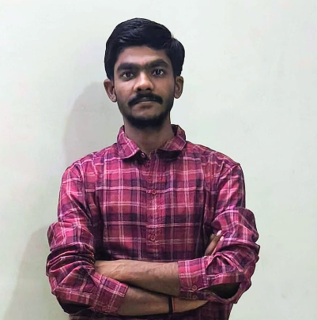
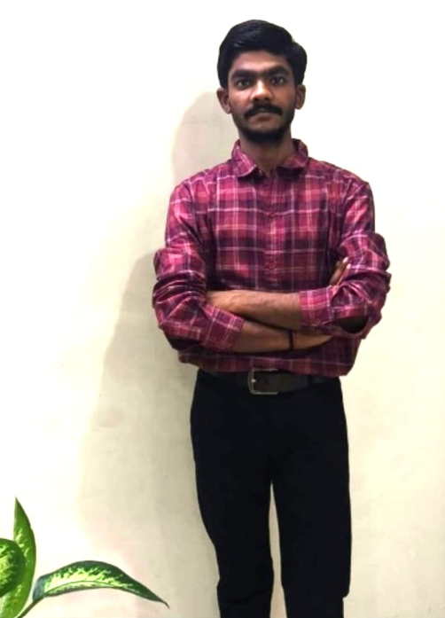

I am an IT Support Engineer skilled in networking, hardware and software troubleshooting, system administration, and technical support. Passionate about solving technical issues and delivering reliable IT solutions.

I am a passionate and dedicated IT Support Engineer with strong knowledge of Networking, Hardware troubleshooting, Windows administration, System configuration, and Technical support. I have hands-on knowledge of LAN/WAN networking, TCP/IP, DNS, DHCP, routing, switching, and network troubleshooting. I continuously learn new technologies to grow as an IT professional.
Networking, CCNA, Hardware Troubleshooting, Windows Administration, Server Administration, Linux Administration, AI & Cloud Basics
Bachelor of Computer Applications (BCA)
Built more than 10 Projects
I have strong technical knowledge in IT Support, Networking, Hardware and Software troubleshooting, System configuration, Windows, Linux, Cloud Computing, and IT security.
Welcome to my IT Support Engineer Portfolio! Explore a collection of my recent projects below. Click on the project to leran more about the technologies tools used.
I Designed and configured a small LAN network using a router, connecting multiple devices through wired and wireless connections.
Designed and configured an OSPFv2 Multi-Area Network with multiple areas, neighbor relationships, route advertisement, and end-to-end connectivity using Cisco Packet Tracer.
Designed and configured an Inter-VLAN Routing using a L3 Switch to enable communication between multiple VLANs and connected networks.
Designed and Configured Telnet-based remote access for Cisco network devices, enabling remote device management and configuration through the network.
Designed and Configured SSH for secure remote access and management of Cisco network devices, enabling encrypted communication over the network.
Designed and Configured DHCP for automated IP address allocation and network configuration of client devices.
Worked on Windows 10/11 installation and configuration using Ventoy, BIOS/UEFI, and Device Manager. Handled disk partitioning, Driver installation, and basic troubleshooting.
I Created a Linux Server Administration Lab using Red Hat Linux in VMware, where I configured networking, users, permissions, SSH, firewall, Apache, and practiced basic server troubleshooting.
If you have any questions or would like to work together, please contact with me. I am always open to new opportunities and collaborations.